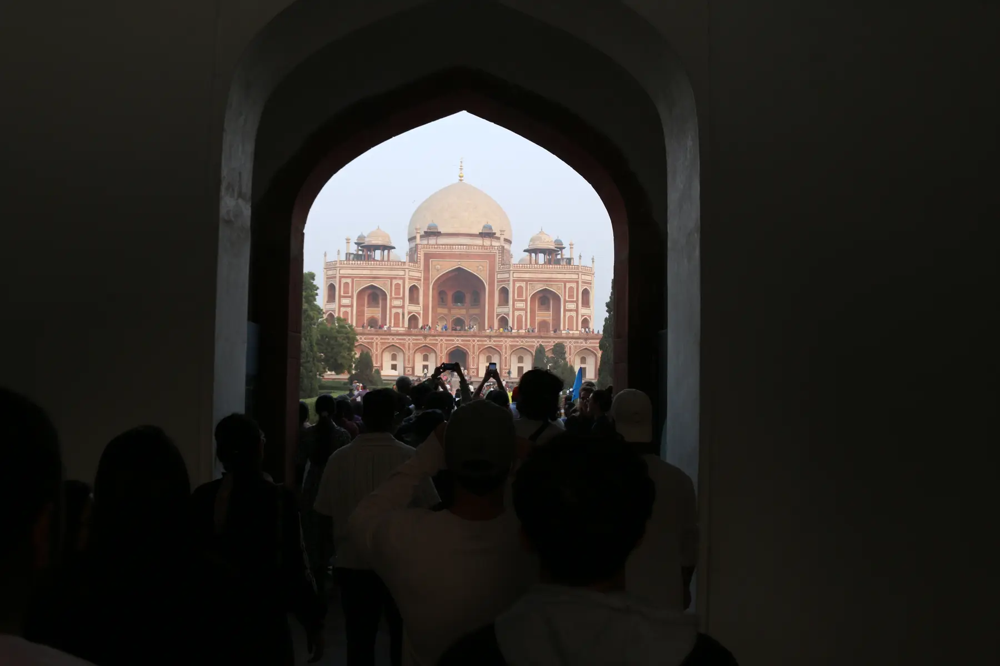

Chapter 05 of 22
Exploring Delhi and Reflecting on Allah’s Plan
Saturday, November 23, 2024 · Part II

After a long journey, we started our day with an excursion to Humayun’s Tomb, splitting into two buses. Though we didn’t have a guide and were unsure of the full significance of the site, the visit offered us a peaceful walk after the hectic schedule of the past few days.
Humayun’s Tomb, built in 1570, is a stunning example of Mughal architecture and a testament to the grandeur of that era. It was commissioned by Humayun’s wife, Empress Bega Begum, and later served as an inspiration for the Taj Mahal. Humayun, the second emperor of the Mughal dynasty, faced many challenges during his reign but is remembered for his perseverance and ultimate triumphs. His final resting place reflects the legacy of a ruler who helped shape the history of this land.
We used our time at the tomb to bond as a group, take pictures, and enjoy a leisurely walk. With masks on due to the smog in Delhi, we were careful yet determined to make the most of this stop. The gardens and expansive courtyards provided a much-needed pause after the whirlwind of travel and disruptions.
It was clear, however, that the Waqf-e-Nau administration’s original plans had shifted. Flights had been delayed, rerouted, and schedules disrupted. Yet, as Allah reminds us in the Holy Qur’an:
And they planned, and Allah also planned; and Allah is the Best of planners.
Qur’an 3:55
These changes were not part of anyone’s agenda—except Allah’s. Perhaps He wanted us to pray a bit more, to witness the miracle of dua, or to practice patience and steadfastness. Despite these challenges, smiles remained on everyone’s faces, a testament to the spirit of the group and the resilience cultivated by faith.
I also admired how Mirza Harris Sahib, Mirza Nabeel Sahib, and their core Waqf-e-Nau team adapted to these constant changes with grace and optimism. Their leadership ensured that even when plans didn’t unfold as expected, the group remained focused and hopeful. After all, Delhi is just a gathering site for us—the heart of this journey lies in Qadian.
After visiting Humayun’s Tomb, we made a quick stop to see the India Gate from the bus. Built by the British in 1931, the India Gate commemorates the sacrifices of Indian soldiers during World War I. Though our time there was brief, the sight of the monumental arch was a poignant reminder of Delhi’s layered history.
As evening settled in, most of us were tired, still adjusting to the jet lag. We said our prayers and sat down to enjoy another delicious dinner. The food has been a true highlight of our stay so far. The host Jamaat in Delhi has worked tirelessly to prepare Mughlai dishes, for which the city is renowned. Every meal has been served on time, with care and generosity that reflects the beautiful spirit of Jamaat Ahmadiyya. May Allah bless the hosts and the Waqf-e-Nau team for their hard work and dedication.
Satisfied and grateful, we settled in for the night, leaving tomorrow’s plans to Allah, the Best of Planners.